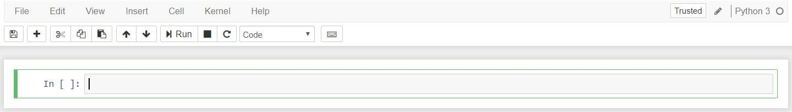

Теперь, когда перед вами открытый блокнот, надеюсь, его интерфейс не будет выглядеть совершенно чуждым; В конце концов, Jupyter – это просто продвинутый текстовый процессор. Почему бы не осмотреться? Просотрите меню, чтобы почувствовать его, особенно потратьте несколько минут, чтобы прокрутить список команд в палитре команд, который представляет собой небольшую кнопку со значком клавиатуры (или Ctrl + Shift + P).

Вы должны заметить два довольно важных термина, которые, вероятно, являются новыми для вас: cells (ячейки) и kernels (ядра) являются ключом как к пониманию Jupyter, так и к тому, что делает его не просто текстовым процессором. К счастью, эти термины не сложно понять.
Мы вернемся к ядрам чуть позже, но сначала давайте разберемся с ячейками. Ячейки образуют структуру ноутбука. На скриншоте нового блокнота в приведенном выше разделе это поле с зеленым контуром. Есть два основных типа ячеек, которые мы рассмотрим:
Первая ячейка в новой записной книжке всегда является ячейкой кода. Давайте проверим это на классическом примере с Hello World. Введите print (‘Hello World!’) в ячейку и нажмите кнопку запуска на панели инструментов показанная выше или нажмите Ctrl + Enter. Результат должен выглядеть как то так:
print('Hello World!')
Hello World!
Когда вы запустите ячейку, ее вывод будет отображен ниже, а метка слева изменится с In [] на In [1]. Вывод ячейки кода также является частью документа, поэтому вы можете увидеть его в этой статье. Вы всегда можете определить разницу между кодом и ячейками Markdown, потому что ячейки кода имеют эту метку слева, а ячейки Markdown – нет.
Часть «In» метки просто короткая запись слова «Input», а номер метки указывает, когда ячейка была выполнена в ядре – в нашем случае ячейка была выполнена первой. Запустите ячейку снова, и метка изменится на In [2], потому что теперь ячейка была второй, запущенной в ядре. Позже станет понятнее, почему это так полезно, когда мы поближе познакомимся с ядрами.
В строке меню нажмите Insert (Вставить) и выберите Insert Cell Below (Вставить ячейку ниже), чтобы создать новую ячейку кода под первым и попробуйте следующий код, чтобы увидеть, что происходит. Вы замечаете что-то другое?
import time
time.sleep(3)
Эта ячейка не производит никакого вывода, но для ее выполнения требуется три секунды. Обратите внимание, как Jupyter показывает, что ячейка в данный момент работает, изменив метку на In [*].
Как правило, выходные данные ячейки поступают из любых текстовых данных, специально напечатанных во время выполнения ячеек, а также из значения последней строки в ячейке, будь то переменная-одиночка, вызов функции или что-то еще. Например:
def say_hello(recipient):
return 'Hello, {}!'.format(recipient)
say_hello('Tim')
'Hello, Tim!'
Последнее, что вы, возможно, заметили при запуске ваших ячеек, это то, что их рамка стала синей, тогда как она была зеленой, когда вы редактировали ее. Всегда есть одна «активная» ячейка, выделенная рамкой, цвет которой обозначает ее текущий режим, где зеленый означает edit mode (режим редактирования), а синий – command mode (командный режим).
До сих пор мы показали, как запустить ячейку с помощью Ctrl + Enter, но есть еще много других возможностей. Сочетания клавиш являются очень популярным аспектом среды Jupyter, поскольку они обеспечивают быстрый рабочий процесс на основе ячеек. Многие из этих действий вы можете выполнять в активной ячейке, когда она находится в командном режиме.
Ниже вы найдете список некоторых сочетаний клавиш Jupyter. Вам не нужно сразу их запоминать, но список должен дать вам хорошее представление о том, что это возможно.
Попробуй это в своей записной книжке. После того, как вы опробуете все команды, создайте новую ячейку Markdown, и мы научимся форматировать текст в наших блокнотах.
Markdown – это легкий, простой в освоении язык разметки для форматирования простого текста. Его синтаксис имеет однозначное соответствие с тегами HTML, поэтому некоторые предварительные знания здесь могут быть полезны, но это определенно не является обязательным условием. Давайте рассмотрим основы с кратким примером.
# This is a level 1 heading
## This is a level 2 heading
This is some plain text that forms a paragraph.
Add emphasis via **bold** and __bold__, or *italic* and _italic_.
Paragraphs must be separated by an empty line.
* Sometimes we want to include lists.
* Which can be indented.
1. Lists can also be numbered.
2. For ordered lists.
[It is possible to include hyperlinks](https://www.example.com)
Inline code uses single backticks: `foo()`, and code blocks use triple backticks:
```
bar()
```
Or can be indented by 4 spaces:
foo()
And finally, adding images is easy: 
При прикреплении изображений у вас есть три варианта:
У Markdown гораздо больше возможностей, особенно в отношении гиперссылок, а также возможно просто включить простой HTML. Если вы захотите узнать больше, вы можете обратиться к официальному руководству от создателя Markdown, Джона Грубера, на его веб-сайте.